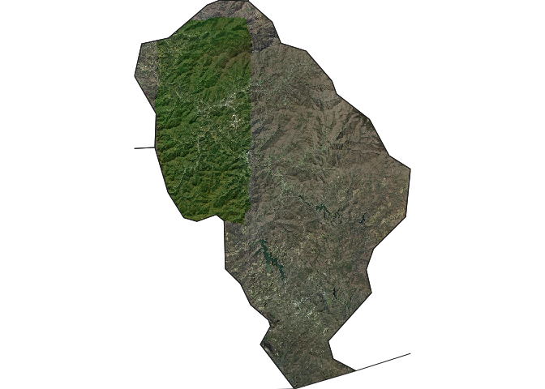
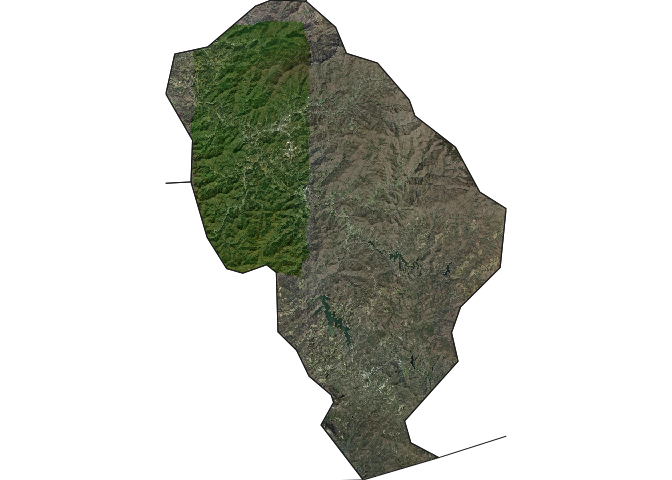

Overview
The goal of ezwarp is to simplify the use of gdalwarp in R. Gdal warp is a very powerful and fast Image reprojection and warping utility. It can be used to reproject (i.e. transform to a new Coordinate Reference System), crop, mask and resample. Unlike many tools in R, this can all be done in a single command, using the warp tool, saving time and code.
At present, there are many ways to access the functionality of gdalwarp in R. These include:
- vapour::warp_raster
- sf::gdal_utils
- stars::st_warp
- {gdalio}
- terra::project
- {whatarelief}
- system(“gdalwarp …”)
Some of these packages/functions (perhaps sensibly) restrict certain functionality of gdalwarp to make specific tasks much simpler (e.g. ‘terra::project’ allows only a single input source).
There are two warp “engines” provided in ezwarp: vapour (the default) and sf. The advantage of vapour is that it supports direct-to-memory read of raster data so no need to store intermediate tif files. However, when things get large, it can be problematic to load the entire dataset into memory, in which case sf may be more suitable.
ezwarp provides simple access to the majority of gdalwarp’s functionality in a simplified API that allows users to focus on the task at hand rather than the disperate classes (and their conversions) that exist in the r spatial ecosystem.
To warp a raster dataset, gdalwarp requires an extent, a dimension and a projection. This can be defined in ezwarp manually using an ezgrid class object which is a very simple s3 object comprising those three key variables (created with ezgrid()). However, estimating raster dimensions can be unintuitive and is a step removed from the required spatial context on the ground. So, ezwarp provides a resolution argument (res) which can be used with an ezgrid object (with or without missing dimension value) or any of the following R spatial classes: SpatRaster, SpatVector, sf, sfc, stars. In addition, ezwarp also supports file paths and URLs for valid spatial files (it’s gdal after all).
terra, sf and stars are the best supported and most popular spatial packages in the R ecosystem. ezwarp aims to support these types along with vector and matrix classes (as output formats only). Further spatial (or indeed non-spatial) classes may be supported in the future.
Installation
# install.packages("remotes")
remotes::install_github("Permian-Global-Research/ezwarp")Examples
A very simple example, defining the grid manually with ezgrid. Here we use the excellent GEBCO elevation dataset via the Australian Antarctic Data Centre’s Cloud optimized Geotiff (COG). Now, clearly downloading at full resolution would take forever. So, using gdalwarp we can resample to a more modest resolution - in this case 0.5 degrees - by manually setting the dimension.
Note that the output can be either a SpatRaster or stars object. Also, see that a general plotting function sciplot is provided to make use of the great scientific colour palettes provided in the {scico} package.
library(ezwarp)
library(terra)
template <- ezgrid(c(-180, 180, -90, 90),
dimension = c(720, 360),
projection = "EPSG:4326"
)
src <- "/vsicurl/https://public.services.aad.gov.au/datasets/science/GEBCO_2021_GEOTIFF/GEBCO_2021.tif"
world.el.terra <- ezwarp(x = src, y = template)
world.el.stars <- ezwarp(x = src, y = template, out_class = "stars")
sciplot(world.el.terra, pal = "bukavu", centre = TRUE)
sciplot(world.el.stars, pal = "oleron", n = 256, centre = TRUE)

The cutline argument can be used to mask regions with a input spatial vector. Here we demonstrate this by using an online geojson of Madagascar from the geoboundaries database directly. Note also that we reuse the source as the target y but set the res argument to 0.5 to make sure we rescale the grid. We also specify crop_to_cutline = TRUE otherwise the extent will default to that defined by y. In this example, the ‘sf’ warp engine is used rather than ‘vapour’.
madagascar <- "https://github.com/wmgeolab/geoBoundariesArchive_4_0_0/raw/299e00623ece6c03bcb9a751eda6094b1eac85a6/releaseData/gbOpen/MDG/ADM0/geoBoundaries-MDG-ADM0.geojson"
world.el.mask <- ezwarp(
x = src, y = src, res = 0.1, cutline = madagascar,
crop_to_cutline = TRUE, engine = "sf"
)
sciplot(world.el.mask, pal = "lapaz")
We can also pass additional arguments to gdalwarp using the options command - See here the gdalwarp docs. Here we pass an sql query for the cutline feature specifying that we only want to use Stokes County (from the nc dataset in sf). Also the crop_to_cutline argument is used here to limit the extent to the specified cropline feature. This example also demonstrates how ezwarp handles multiple bands, in this case with the esri satellite WMS layer. By default, all bands are read - this can be changed with the bands argument.
library(sf)
esri_sat <- "<GDAL_WMS><Service name=\"TMS\"><ServerUrl>http://services.arcgisonline.com/ArcGIS/rest/services/World_Imagery/MapServer/tile/${z}/${y}/${x}</ServerUrl></Service><DataWindow><UpperLeftX>-20037508.34</UpperLeftX><UpperLeftY>20037508.34</UpperLeftY><LowerRightX>20037508.34</LowerRightX><LowerRightY>-20037508.34</LowerRightY><TileLevel>17</TileLevel><TileCountX>1</TileCountX><TileCountY>1</TileCountY><YOrigin>top</YOrigin></DataWindow><Projection>EPSG:900913</Projection><BlockSizeX>256</BlockSizeX><BlockSizeY>256</BlockSizeY><BandsCount>3</BandsCount><MaxConnections>10</MaxConnections><Cache /></GDAL_WMS>"
f <- system.file("gpkg", "nc.gpkg", package = "sf")
nc.mask <- ezwarp(
x = esri_sat, y = esri_sat, res = 100, cutline = f,
crop_to_cutline = TRUE, nodata = -99, engine = "sf"
)
jackson.mask <- ezwarp(
x = esri_sat, y = esri_sat, res = 25, cutline = f,
options = c("-csql", "SELECT * FROM 'nc.gpkg' WHERE NAME = 'Jackson'"),
crop_to_cutline = TRUE, nodata = -99
)
f_sf <- read_sf(f) |>
st_transform(vapour::vapour_raster_info(esri_sat)$projection)
terra::plotRGB(nc.mask)
plot(st_geometry(f_sf), add = TRUE, border = "grey90")
terra::plotRGB(jackson.mask)
plot(st_geometry(f_sf), add = TRUE, border = "grey10") 

This example is just to illustrate that ezwarp can handle differing inputs as sources - url/filepath/SpatRaster/stars and can use all of these along with sf/sfc/SpatVector/ezgrid as a target (y) too.
nc_sub1 <- f_sf[1:10, ]
nc_sub2 <- vect(f_sf[90:100, ])
nc_sub1.terra <- ezwarp(
x = src, y = nc_sub1, res = 100, cutline = nc_sub1,
crop_to_cutline = TRUE
)
nc_sub2.stars <- ezwarp(
x = src, y = nc_sub2, res = 200, cutline = nc_sub2,
crop_to_cutline = TRUE, out_class = "stars"
)
multi.ras <- ezwarp(
x = list(nc_sub1.terra, nc_sub2.stars),
y = f_sf, res = 200, out_class = "stars"
)
sciplot(nc_sub1.terra, pal = "bamako")
plot(st_geometry(f_sf), add = TRUE, border = "grey30")
sciplot(nc_sub2.stars, pal = "vanimo", reset = FALSE)
plot(st_geometry(f_sf), add = TRUE, border = "grey30", reset = TRUE)
sciplot(multi.ras, pal = "romaO", reset = FALSE)
plot(st_geometry(f_sf), add = TRUE, border = "grey30", reset = TRUE)

A rayshader-oriented matrix output class is also supported (i.e. North is up). This will return a matrix if the source has only one band (or only one is requested). A multidimensional array is returned when more than one band is present. The returned object includes extent, dimension and projections attributes. This can be useful if you plan to directly manipulate your data in R.
library(rayshader)
# get terrain as matrix
nc_dtm.mat <- ezwarp(src, jackson.mask,
res = 50, out_class = "rayshader", nodata = -999,
resample = "lanczos"
)
nc_dtm.mat |>
sphere_shade(texture = "imhof4") |>
add_shadow(ray_shade(nc_dtm.mat,
zscale = 10, sunaltitude = 20,
sunangle = 200,
), 0) |>
plot_3d(nc_dtm.mat,
zscale = 10, fov = 130, theta = 50, phi = 20, zoom = 0.1,
windowsize = c(1000, 800)
)
Sys.sleep(0.2)
render_depth(focallength = 300, clear = TRUE)